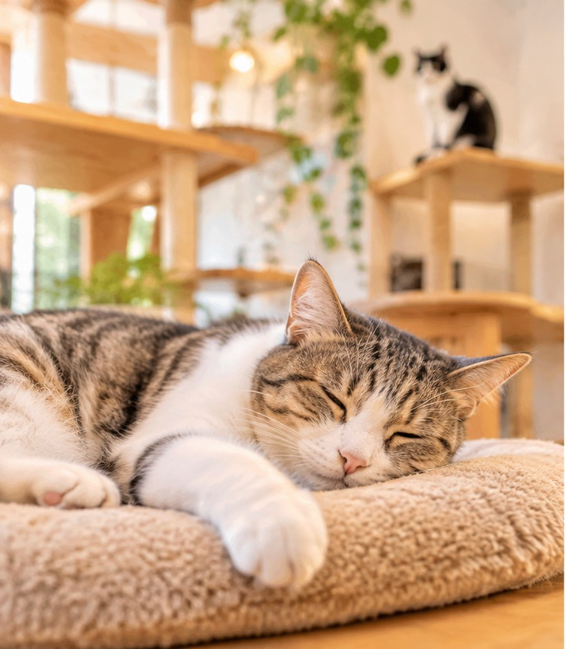
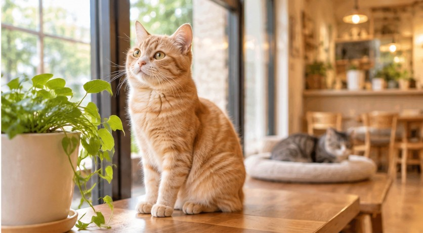
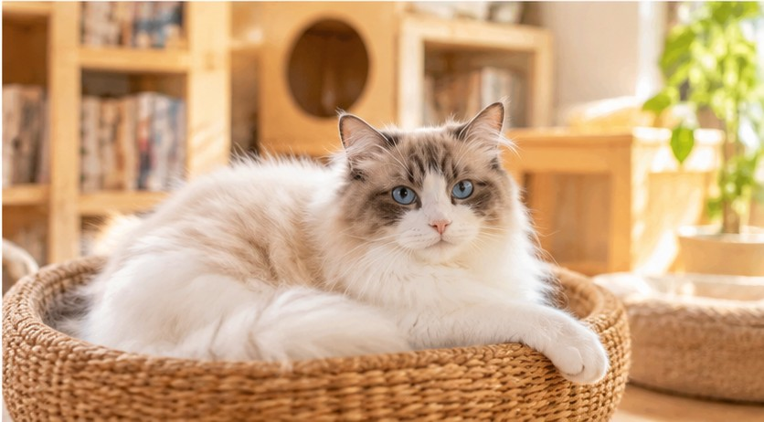

猫たちを眺める
自由気ままな姿を見ているだけで癒やされます。
01 — ABOUT
私の好きなことのひとつは、猫カフェに行くことです。
ふわふわの毛並み、気まぐれなしぐさ、気持ちよさそうに眠る姿。猫たちを眺めているだけで、忙しい毎日を少し忘れて、心がゆっくりほどけていきます。
お気に入りのお店を見つけたり、その日に出会った猫の写真を撮ったり。そんな猫カフェでの時間を、このページに少しずつ残していきます。
02 — GALLERY
お気に入りの猫たちの、のんびりした表情。



03 — MY FAVORITE
自由気ままな姿を見ているだけで癒やされます。
その日だけの表情や、かわいいしぐさを写真に残します。
あたたかい飲み物と一緒に、ゆったりリラックス。
※写真はイメージです。実際に訪れたお店や猫の情報に合わせて、文章や写真を変更してください。